best.pt가 생겼다는 것과 그 모델로 현재 검사한다는 것은 분리해서 봅니다.
처음에는 현재 작업 위치부터 봅니다
왼쪽은 이미지 큐, 가운데는 캔버스, 오른쪽은 지금 단계에서 필요한 작업 패널입니다. 상단에는 데이터셋과 모델 상태가 계속 남아 있습니다.
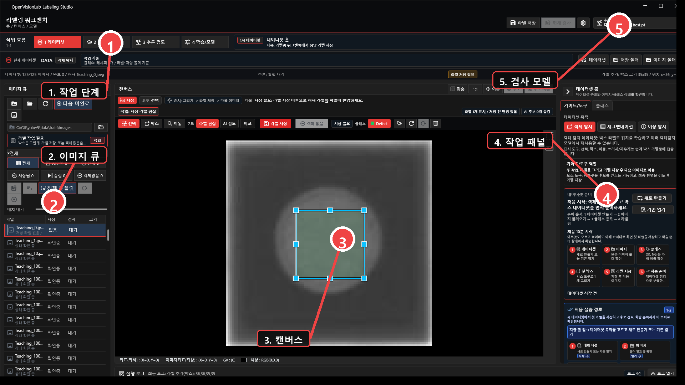
먼저 볼 곳
- 상단 현재 데이터셋에서 이름과 목적을 봅니다.
- 저장 폴더가 오늘 작업 폴더인지 확인합니다.
- 왼쪽 이미지 큐에서 저장 필요, 저장됨, AI 후보 수를 봅니다.
- 오른쪽 패널에서 지금 처리할 일을 확인합니다.
헷갈릴 때 기준
- 저장 필요는 아직 파일에 쓰지 않았다는 뜻입니다.
- 저장됨은 라벨 파일에 반영됐다는 뜻입니다.
- AI 후보는 모델이 낸 제안입니다.
데이터셋은 이미지 폴더와 저장 폴더를 따로 잡습니다
이 단계가 잘못되면 새 데이터셋을 만들었는데도 이전 라벨이 다시 보입니다.

| 항목 | 의미 | 실수했을 때 증상 |
|---|---|---|
| 이미지 폴더 | 원본 이미지가 들어 있는 폴더입니다. | 이미지는 보이는데 기존 라벨이 같이 보일 수 있습니다. 라벨은 이미지 폴더만 따라가지 않습니다. |
| 저장 폴더 | 라벨, 클래스, data.yaml, 학습 분할 파일이 저장됩니다. |
같은 저장 폴더를 쓰면 이전 라벨과 학습 파일을 다시 읽습니다. |
| 데이터셋 목적 | 객체탐지, 세그멘테이션, 이상탐지 흐름을 정합니다. | 도구와 학습 준비 항목이 맞지 않습니다. |
라벨링은 그리고, 확인하고, 저장하는 순서입니다
저장 라벨 패널은 실제 학습 데이터로 들어갈 라벨을 보는 곳입니다. 모델 후보와 같은 의미로 보지 않습니다.
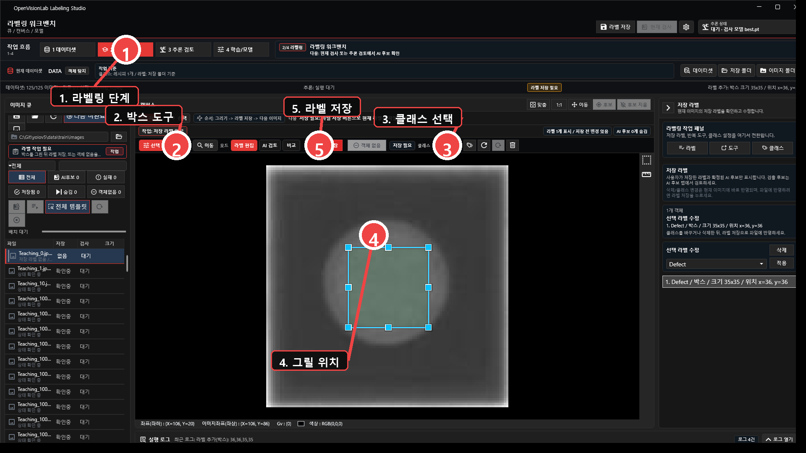
- 상단에서 2 라벨링을 선택합니다.
- 툴바에서 박스를 선택합니다.
- 대상 영역을 드래그합니다.
- 오른쪽 저장 라벨 패널에서 클래스와 크기를 확인합니다.
- 필요하면 클래스를 바꾸고 적용을 누릅니다.
- 라벨 저장을 눌러 파일에 반영합니다.
저장 라벨과 AI 후보는 분리해서 봅니다
둘을 같이 보면 비교는 편하지만, 의미는 다릅니다. 작업 중에는 보기 모드를 바꿔가며 무엇을 보고 있는지 확인합니다.
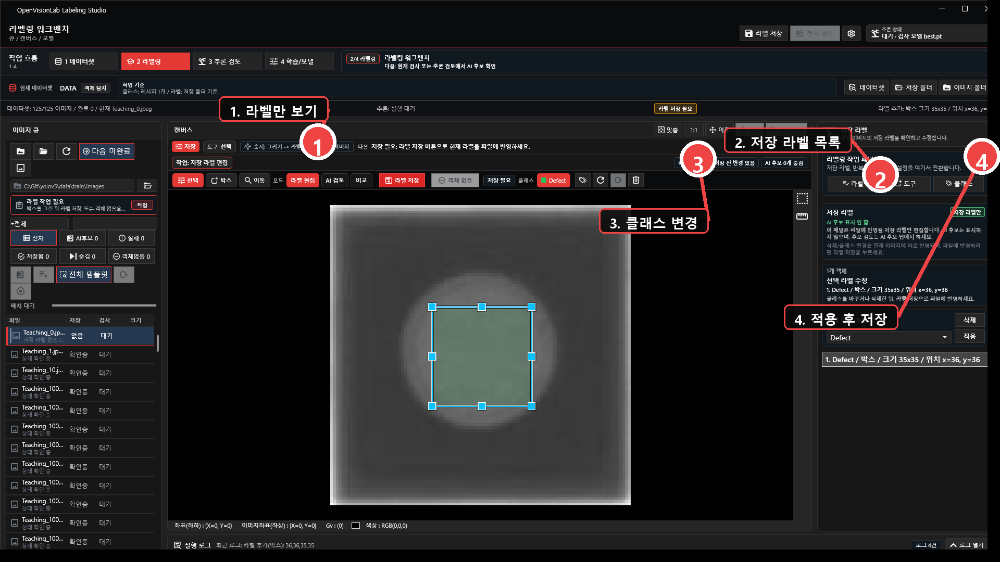
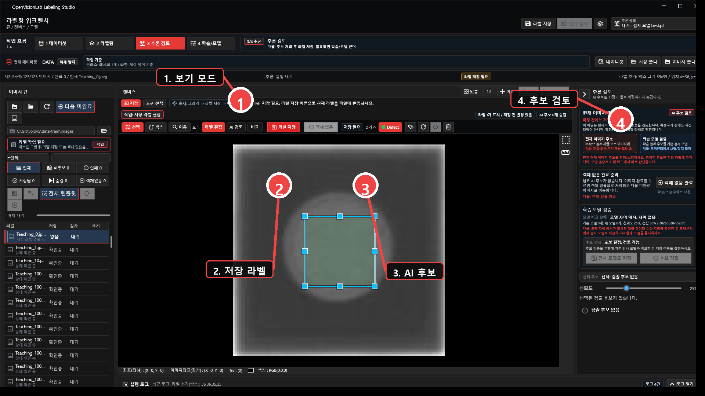
| 보기 | 보이는 것 | 언제 쓰는지 |
|---|---|---|
| 라벨 | 저장 또는 편집 중인 라벨 | 학습 데이터 확인 |
| 추론 | AI 후보 | 모델이 찾은 위치 확인 |
| 모두 | 저장 라벨과 AI 후보 | 정답과 후보 차이 비교 |
저장 라벨을 고쳤으면 다시 저장합니다
클래스 변경, 삭제, 위치 수정은 메모리 상태를 먼저 바꿉니다. 파일에 반영됐는지는 저장 상태가 사라지는지 봐야 합니다.
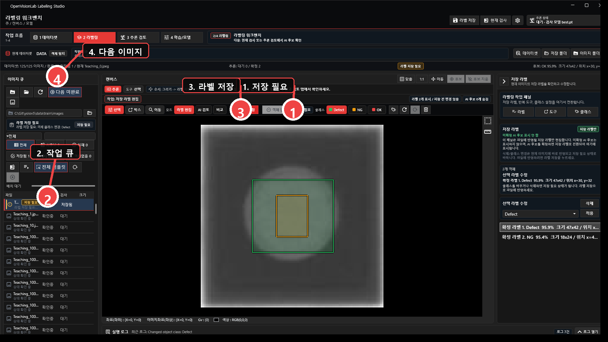
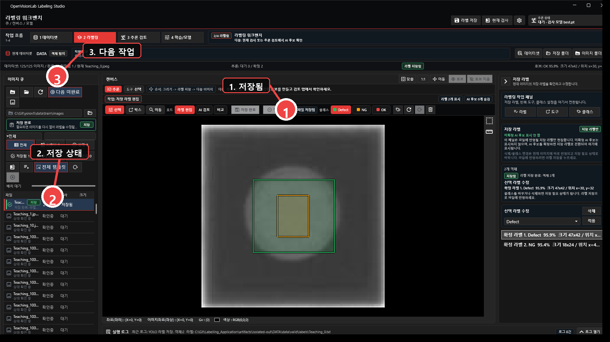
반복되는 위치는 템플릿으로 후보를 만듭니다
템플릿은 학습 기능이 아니라 반복 작업을 줄이는 보조 도구입니다. 기준 라벨과 비슷한 위치를 찾아 후보를 만듭니다.
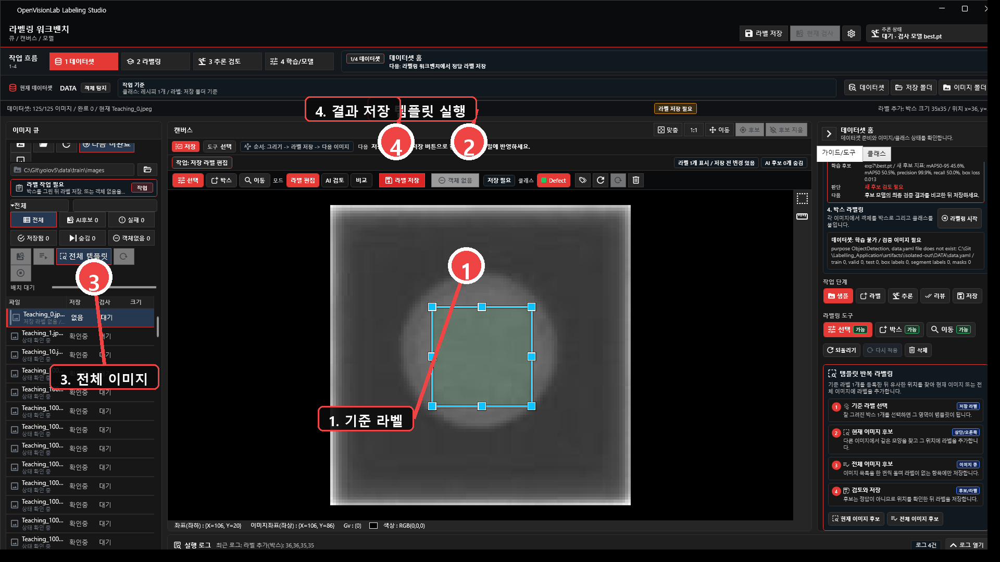
사용 순서
- 기준 이미지에서 박스를 그립니다.
- 그 박스를 저장 라벨로 저장합니다.
- 현재 이미지 후보로 한 장을 검증합니다.
- 전체 이미지 후보로 목록을 한 번씩 돕니다.
- 만들어진 후보를 보고 저장합니다.
못 찾는 경우
- 기준 박스가 배경을 너무 많이 포함했습니다.
- 이미 같은 위치가 저장 라벨로 잡혀 후보에서 제외됐습니다.
- 이미지마다 대상 크기나 밝기가 너무 다릅니다.
- 현재 이미지 한 장 검증 없이 전체 후보부터 돌렸습니다.
학습은 데이터셋 점검 후에 시작합니다
경고가 있어도 실행은 될 수 있습니다. 다만 결과를 믿을 수 있는지는 데이터셋 상태를 보고 판단해야 합니다.
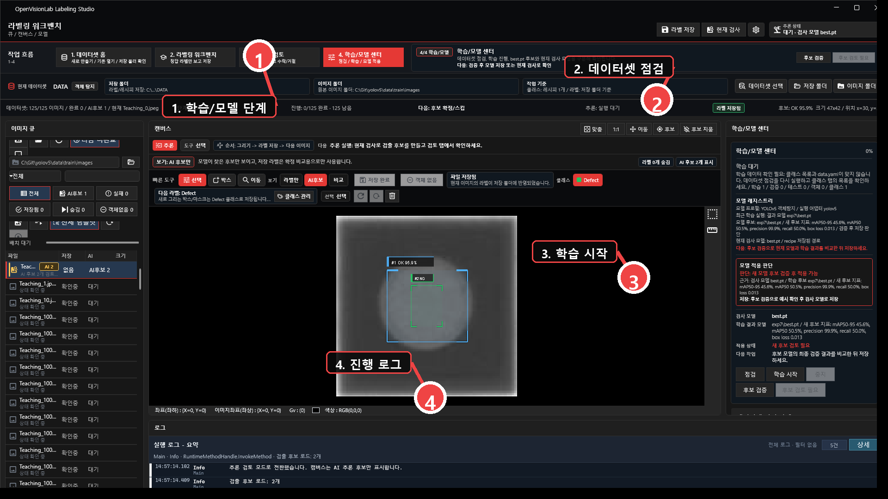
- 이미지 수와 라벨 수가 맞는지 봅니다.
- train, valid, test 분할이 있는지 봅니다.
- 클래스별 라벨 수가 너무 치우치지 않았는지 봅니다.
- Python, YOLOv5 경로, client script 경로가 맞는지 봅니다.
- 학습 중에는 epoch 로그와 실패 사유를 패널에서 확인합니다.
학습 완료 후에는 모델 후보와 현재 검사 모델을 따로 봅니다
best.pt가 만들어졌다는 것과 그 모델로 검사한다는 것은 다른 단계입니다.
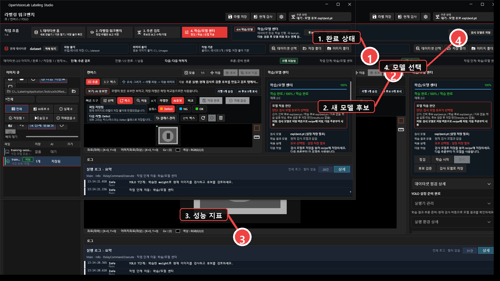
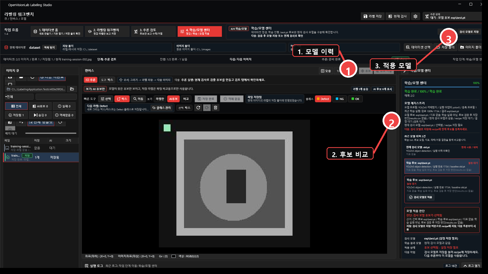
| 상태 | 의미 | 다음 행동 |
|---|---|---|
| 학습 완료 | 학습이 끝나고 weight 파일이 만들어졌습니다. | 후보 검증을 실행합니다. |
| 모델 후보 | 새 weight가 등록됐지만 아직 검사 모델로 확정되지 않았습니다. | 기존 모델과 비교합니다. |
| 현재 검사 모델 | 지금 현재 검사 버튼이 사용하는 모델입니다. | 상단 상태와 모델 센터에서 다시 확인합니다. |
추론 검토는 후보를 확정하거나 버리는 단계입니다
현재 검사 모델로 후보를 만들고, 맞는 후보만 저장 라벨로 넘깁니다.
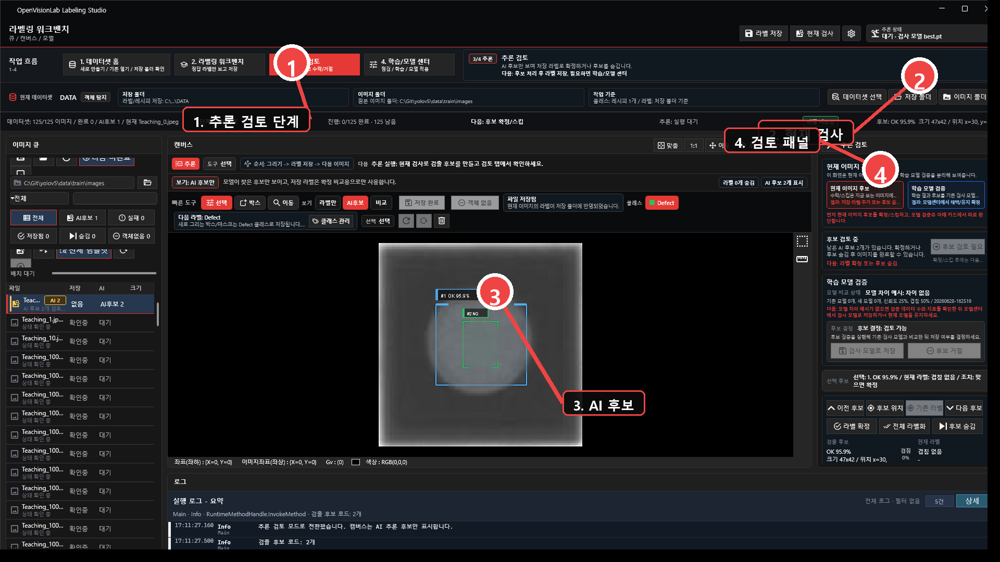
- 3 추론 검토로 이동합니다.
- 현재 검사를 실행합니다.
- 후보가 있으면 위치와 클래스를 봅니다.
- 맞으면 확정합니다.
- 틀리면 스킵합니다.
- 확정된 후보는 저장 라벨이 되므로 마지막에 라벨 저장을 누릅니다.
모델은 비교하고 나서 적용합니다
새 모델이 생겼다고 바로 바꾸지 않습니다. 기존 모델과 비교한 뒤 현재 검사 모델로 저장할지 결정합니다.
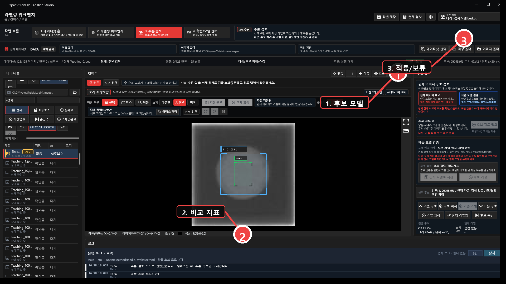
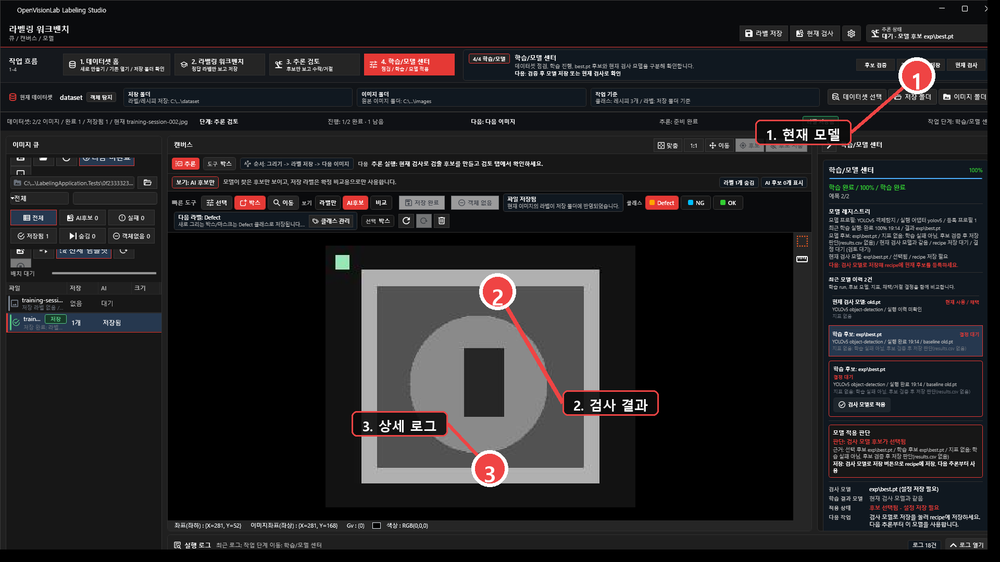
- 같은 test split으로 비교합니다.
- 같은 클래스 목록과 라벨 기준으로 비교합니다.
- precision, recall, 놓침, 과검출을 같이 봅니다.
- 근거가 부족하면 기존 검사 모델을 유지합니다.
- 적용 후에는 상단 `추론 상태`에서 모델명이 바뀌었는지 확인합니다.
세그멘테이션과 이상탐지는 목적이 다릅니다
데이터셋, 저장, 학습, 추론 흐름은 유지하되 라벨 형태와 검증 기준은 달라집니다.
세그멘테이션
- 박스 대신 polygon, brush, eraser로 영역을 만듭니다.
- 라벨 파일 형식이 객체탐지와 다릅니다.
- 브러시와 지우개는 성능 경로가 중요하므로 UI 수정과 별도로 검증합니다.
이상탐지
- 대부분 이미지 단위 정상/비정상부터 봅니다.
- 결함 위치까지 필요한지 프로젝트 기준을 먼저 정합니다.
- gate가 없는 기능은 완료된 기능처럼 표시하지 않습니다.
하루 작업 체크리스트
아래 항목만 지켜도 저장 폴더 혼동, 후보와 라벨 혼동, 모델 적용 혼동을 대부분 줄일 수 있습니다.
라벨링 시작 전
- 데이터셋 이름 확인
- 이미지 폴더 확인
- 저장 폴더 확인
- 클래스 목록 확인
- 현재 검사 모델 확인
학습 후
best.pt후보 등록 확인- 후보 검증 실행
- 기존 모델과 비교
- 검사 모델로 저장 여부 결정
- 상단 모델 상태 다시 확인
이전 6장 샘플 캡처는 테스트 호환을 위해 남겨 둡니다: images/01-guide.png, images/06-inference-review.png.
{kind=link}
{kind=link}